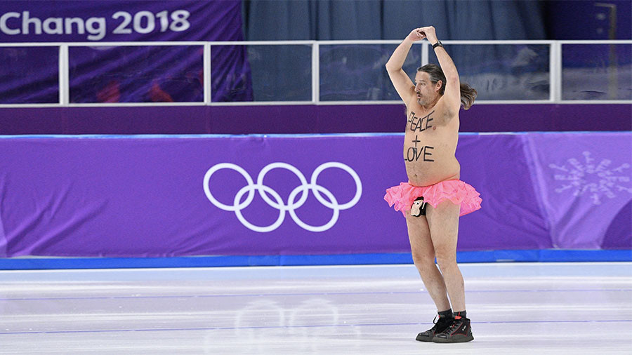

Building and curating your brand (online presence)
Motivation
- You will likely have many jobs throughout your career.
- Freelance/self-employed jobs keep growing.
- Most good jobs (and other opportunities) are found through connections.
- Think of yourself as a “brand”.

Motivation
- People (potential collaborators, employers, employees, etc.) will look you up online.
- If you don’t control your online presence, you are at the mercy of what shows up.
Go ahead and search for yourself online. What comes up?
How to build and manage your brand
- Create and curate an online presence.
- Create and curate content.
- Develop a brand identity, i.e., who you are (professionally).
Content types
- Created “once”, then static: blog posts, videos, …
- Created “once”, then updated: your online CV/profile, teaching materials, …
- Created often, usually not very permanent: Mastodon, LinkedIn, Instagram, …
What types of content have you created previously?
Ways to build and manage your online presence
- General platforms
- Academia/Science specific platforms
- Self-built sites
General Sites

- The professional networking site. Almost required to be on there.
- You can customize your profile a good bit.
- A good way to showcase yourself.
- Great for connecting with others.
- LinkedIn is useful even if you are not looking for a job!
- Build a good profile early, not a week before you start applying.
- Some features require a subscription.
- Examples:
Who of you is on LinkedIn? (How) do you use it? How up-to-date is your profile?
Employer listings
- Depending on the employer, you might have a company entry.
- Usually not directly controlled by you, not very flexible.
- Use it as needed, but if possible, link to your own main web presence.
- Examples:
Blogging sites
Medium, Substack, etc.
- Platforms for blog posts.
- They promote posts, you can reach a wider audience than on your personal blog.
- You can potentially get paid.
- Not all content is freely available, some is behind a paywall.
- Not as much control as on your own website.
- Examples:
Anyone read or write using a blogging site?

- A great tool to manage projects and work collaboratively.
- Great way to showcase any ‘products’ you’ve made.
- Lets you create simple websites fairly easily.
- Somewhat technical, takes time to get used to it.
- Showing you know/use GitHub is a desirable skill by itself.
- Great perks for students.
- Examples:
Anyone using GitHub? How do you use it?

- Good for teaching, also useful for outreach.
- You can create your own channels for specific projects.
- In these days of online conferences, your presentation might be recorded. Link to it.
- Examples:
Anyone producing YouTube content? Or regularly consuming scientific/professional YouTube content?
Podcasts
- Very popular these days.
- Seem like a lot of work (though maybe less than Youtube).
- Be clear about goals and commitment (e.g. format/posting frequency) before you start.
- Examples:
Anyone making/consuming scientific/professional podcasts?
Academia/Science specific sites
Academia/Science specific sites
- Google Scholar
- ORCID
- ResearchGate
- Academia.edu
- Mendeley
- ImpactStory
- Publons
- …
Google Scholar
- Only for publications (broadly speaking).
- Gives citation metrics.
- Is fairly automated, you have to do very little.
- Great way to keep track of your papers.
- Examples:
If I want to get a quick idea what research someone does in academia, I check their Google Scholar page. If they don’t have one, I’m annoyed.
ORCID
- Gives you a unique ID to track your research productivity.
- Used by a lot of journals.
- Very useful if you have a (slightly) common name (but even if not).
- Free and not-for-profit.
- If you plan on staying in academia/research, you should set up ORCID.
- Examples:
ResearchGate/Academia/Mendeley/etc.
- Types of academic social network sites.
- All are commercial (as far as I know).
- You have various levels of control of how your profile looks like.
- Examples:
Anyone using any of those sites, if yes how?
ImpactStory/Kudos/Publons/etc.
Sites that try to measure your ‘impact’.
Maybe fun, but I haven’t found them too useful (yet).
As metrics beyond grants/papers become more important, sites like these might become more useful.
Examples:
Your own site
Own website
- You have complete control.
- You have to build and maintain it yourself.
- Lot’s of ways to do that. Many are free.
Who has their own website? How did you make it, how do you use/maintain it?
Website builders
- Google Sites, Wordpress, Wix,…
- Some free, some paid, some ads
- Limited flexibility for free versions
- Usually easy to use
- Examples:
Build your own
- Using some software stack to make your own website
- More flexibility
- Usually a bit more technically challenging
- Fairly easy these days using Quarto
- Examples:
- Resources:
General thoughts and suggestions
Have a plan
- Decide what you want to be known for, create and curate content accordingly.
- Start with an overall goal/idea for your site(s) before you create them.
- Why are you doing this?
- What do you (not) want to put out there?
- What do you (not) want to be known for?
- Who is (not) your audience?
- What is (not) the purpose of your online presence?
Be picky
- Give some thought to the platforms you want to (not) use.
- Better have fewer online outlets that you keep up-to-date with good quantity/quality content than being on too many platforms.
- You don’t need to duplicate, e.g. you can/should link sites (e.g. link to your Google Scholar publications from LinkedIn).
- Adopt the platforms that work for you (e.g. LinkedIn vs. Youtube vs. Blog vs. TikTok vs…)
Be consistent
- In general, stick to “your” topics. If you are known for topics X and Y, the decision to talk about Z should be planned/deliberate.
- Start simple/easy/slow, then ramp up. Better an update a month than a month long ‘binge’ followed by a year of no updates.
- Be consistent. One blog post/video/piece of content a week for a year is better than 52 in a single week and nothing else after that.
Occasional changes in overall content/structure/frequency are ok, but try to be deliberate.
Content is king
- You can spend/waste a lot of time fiddling with the layout and styling (trust me, I’ve done that).
- In the end, good content is what matters most.
- Examples:
If in doubt, make it public
- Anything that might be useful to others (or your future self) is worth putting out there.
- Things don’t always need to be polished, but you should have some minimum standard of quality.


Some advertising is needed
- If people don’t find you, your impact is low.
- Cross-link to your various online locations.
- Use platforms to promote your content (e.g. LinkedIn).
- Don’t worry too much about search engine optimization (SEO). If you create good and persistent content, you should soon show up on top.
Keep track (a little bit)
- Set Google alerts for your name (or other keywords).
- Consider measuring your impact (e.g. Site visits, Software downloads, Twitter followers, GitHub stars).
- Those metrics can be useful for career advancement, but don’t get too hung up about them.
- Examples:
Warnings
- Anything you put online is there “forever”, even if you delete it later.
- Be professional, even if you decide to post content that’s not directly career related.
- Online can be a HUGE time and attention suck!
Always be mindful of the ultimate reason for having an online presence/brand. Let that guide the quality and quantity of your online activities.
Summary
You need an online presence that you control.
- Minimum: Decent LinkedIn site, maybe augmented with Google Scholar or similar.
- Better: Also own website with links to your other online outlets.
- Advanced: Also become active on certain platforms (regular blogs/videos/podcasts/tweets, etc.).
Social Media
Facebook, Instagram, TikTok, etc.
Has anyone had experiences using social media in a professional setting?